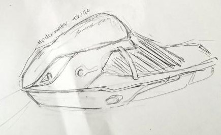
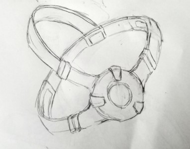
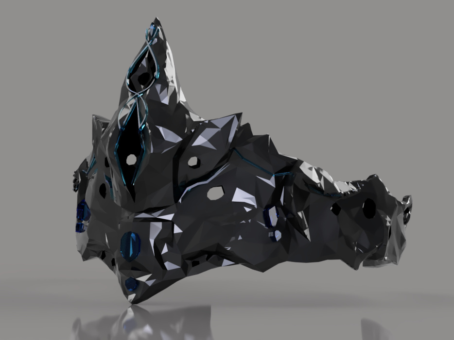
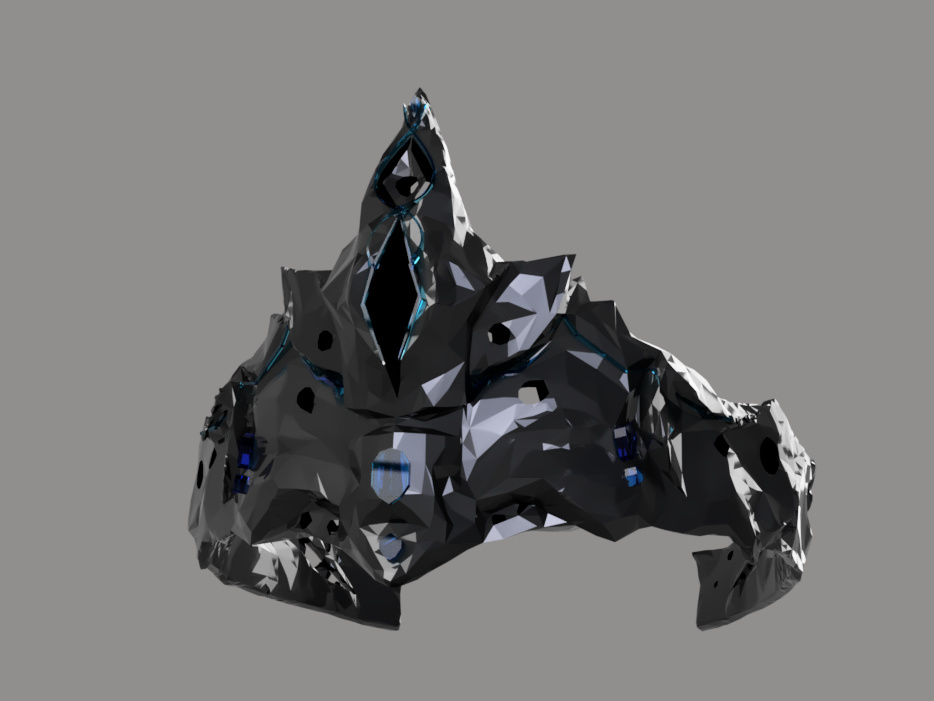
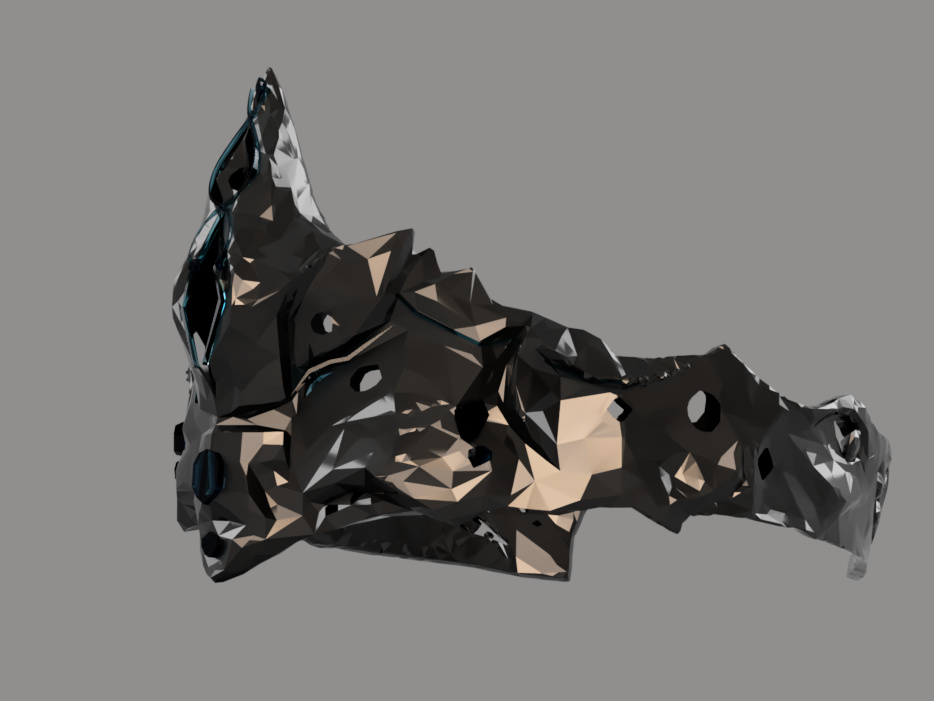
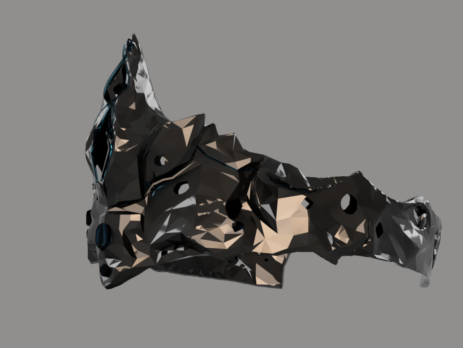

The Lion Dance is a traditional dance originating in Chinese culture and embraced by several other Asian countries (i.e. Vietname, Japan, Jorea, Tibet), where dance performers wear a lion costume and mimic a lion's movement as an act of bringing good luck, fortune, and ward off evil spirits. Typically, the costume is in colors that symbolize riches and fortune.
I chose this specific modern artifact because it is a large part of my Vietnamese culture and something I've always embraced and looked forward to during the Vietnamese New Year. There are two lion dances: Chinese Northern Lion and the Chinese Souther Lion. The specific lion dance shown in the video and seen frequently in the Bay Area is the Chinese Southern Lion Dance, known for its adoption of kung fu moves and postures to aid its movement and stances. It heavily embraces the richness of expression and appearance, complex footwork, and strong, roaring drumming to create a memorable performance for all.

.jpg)
.jpg)


For my first sketch for Idea 2 was a underwater camera, that could either be self-controlled, controlled, or tagged along with. This could be a vehicle that acts as a police force or search force to seek for items, underwater beings, etc. The vehicle is designed to be dark and small as to not be extremely noticeable nor scare when searching for items/beings. It has it's own light source to search in dark uderwater areas.
My second sketch for Idea 2 was an Underwater Vehicle as a mode of transportation. This vehicle was inspired by aquatic species to have killer whale and dolphin like qualities. This allows for more efficient and easy gliding while traveling in the depths of water. It is built with a waterproof engine that can be started with the turn of the handle (like a motorcycle). It is only capable of holding 1 individual
My first sketch of Idea 3 are some examples of face asks I was experimenting with. I wanted these masks to represent the "Puritan" group of our "Soul World" during the 3057 Soul Purge War. They are in charge of protecting the souls of their universe from the "Dark" Cult. The "Dark" Cult scout and steal the purest souls to use for energy and dark pratcies and the Puritans must try to save these captured souls.
These goggles are an advanced technology that can see the souls of other individuals. It allows to see the purity of other's souls.
This is the modeled mask representative of the "Puritans" from the 1st Soul Purge War of our Soul Vision universe. Their mask consists of rare soul stones that allow them to see the purity/impurity of individual's souls for long periods of time without visual damage. The mask sits directly on their eyes, snug on the front of their face. The Puritan group is in search of souls that have been snatched by the "Dark" Cult.
 .jpg) 
